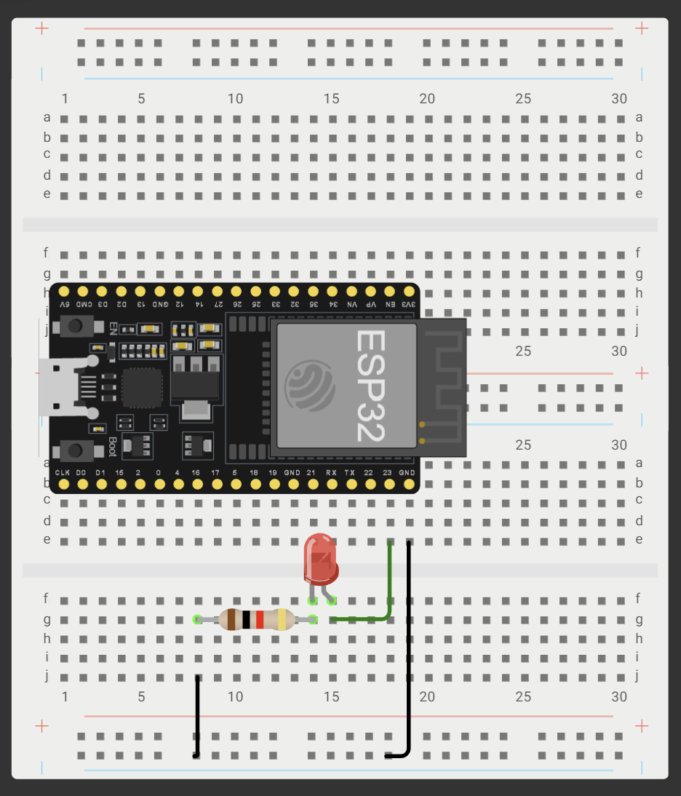
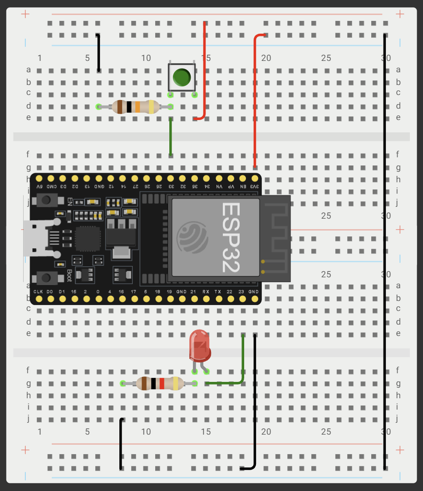
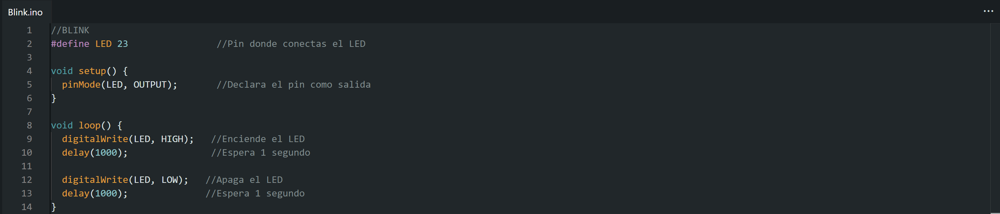
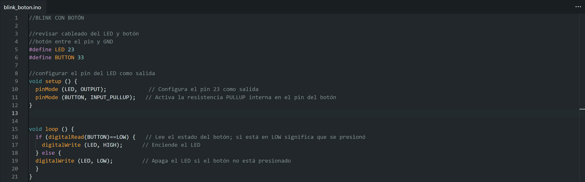
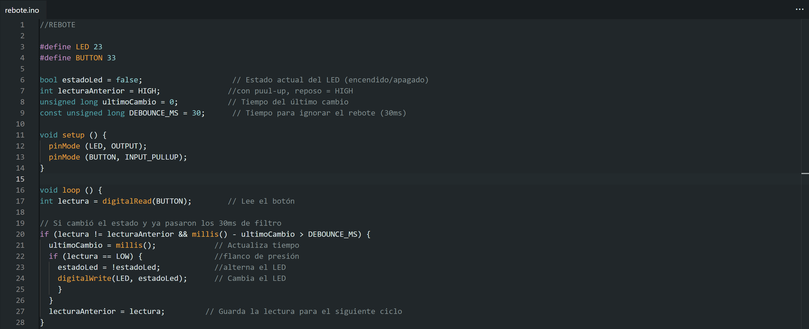

Sesión 2 — ESP32: Salida, Entrada & Antirrebote
Objetivos
- BLINK (salida digital): ✅
◦ LED externo en GPIO23 parpadeando a 1 Hz. - BLINK con botón (entrada digital): ✅
◦ El LED enciende mientras el botón está presionado (INPUT_PULLUP). - TOGGLE con antirrebote: ✅
◦ Cada presión del botón alterna el LED.
◦ Sin delay().
Materiales
- (1×) ESP32 DevKit V1 (WROOM-32)
- (1×) Cable USB de datos
- (1×) LED + (1×) resistor 220 Ω
- (1×) Push button
- (1×) Resistor 10 kΩ (opcional)
- Protoboard y jumpers
Desarrollo
Esquemáticos

Esquemático de conexión BLINK

Esquemático de conexión BLINK CON BOTÓN Y TOGGLE
Códigos

Código implementado de BLINK

Código implementado de BLINK CON BOTÓN

Código implementado de TOGGLE
Demostraciones en Video
Demostración de funcionamiento: BLINK
Demostración de funcionamiento: BLINK CON BOTÓN
Demostración de funcionamiento: TOGGLE
Explicación:
¿Qué es el rebote de un botón?
Es el "chispazo" mecánico que ocurre al presionar un botón. Sus placas metálicas internas rebotan microsegundos antes de asentarse, se siente un solo clic pero la ESP32 es tan rápida que lee 10 clics seguidos.
¿Por qué con INPUT_PULLUP la lógica queda invertida?
La ESP32 alimenta el pin internamente todo el tiempo, por lo que mientras el botón está suelto el pin detecta energía y marca HIGH. Al presionarlo mandas esa corriente a tierra y la apagas marcando LOW.
Fallas
- Síntoma: Al intentar subir el código a la ESP32, aparecía un error indicando que el puerto estaba ocupado o no existía. El cable USB actuaba simplemente como un cargador, pero no transmitía datos.
- Cómo lo encontré: Revisamos el Administrador de Dispositivos en la computadora dentro de la sección de puertos COM y LPT. Notamos que no detectaba ninguna placa conectada por USB y únicamente aparecían los puertos del Bluetooth.
- Solución: Identificamos el chip de la tarjeta ESP32 el cual es el CP2102 e instalamos su driver correspondiente en la laptop. Tras la instalación, la computadora reconoció el puerto bajo el nombre Silicon Labs CP210x USB to UART Bridge, logrando así que los datos se transmitieran correctamente a la tarjeta.
Aprendizajes
En esta práctica aprendimos la importancia de configurar correctamente los controladores de comunicación entre la computadora y la tarjeta ESP32 antes de intentar subir cualquier código. También comprendimos cómo funciona la lógica de programación para salidas digitales, cómo manejar entradas con el modo INPUT_PULLUP y cómo solucionar los problemas de rebote en botones tanto por hardware como por software.
Siguiente paso
Para las siguientes prácticas buscamos aprender más sobre programación para poder hacer sistemas un poco más complejos, entender bien su funcionamiento y lograr armarlos correctamente antes de ponerlos en práctica.